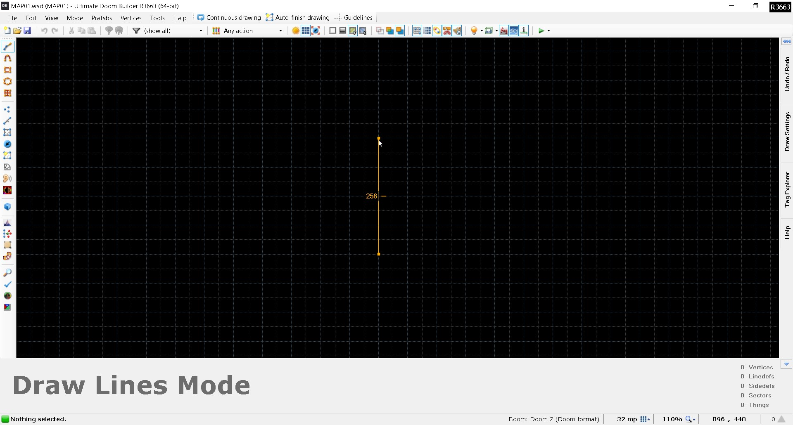
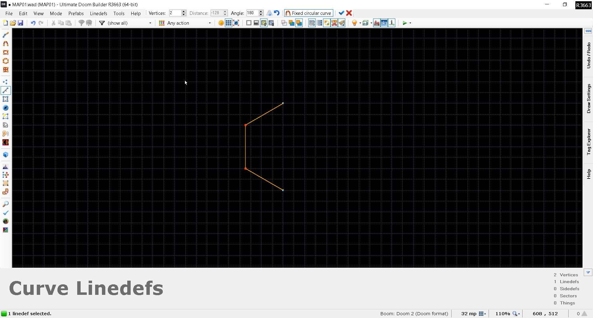
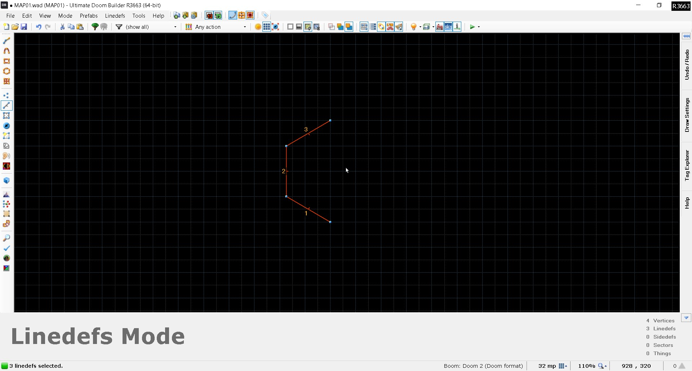
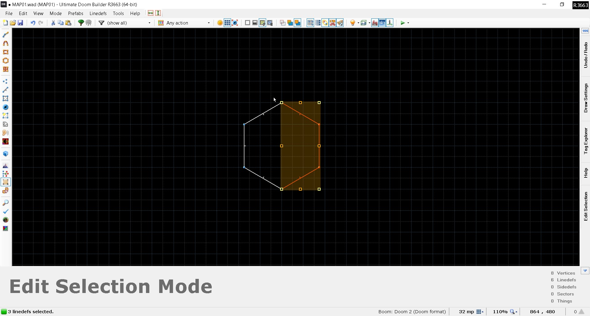
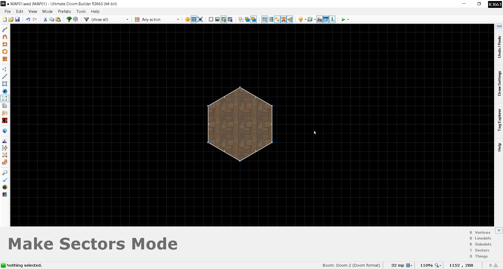

In this tutorial, I will guide you through my method of drawing hexagons in Doom Builder. With this method, you should be able to draw near-perfect hexagons yourself with relative ease and speed. Pictures are included as a reference.
1. Draw a single line. The rule of thumb here is to consider how long you want each side of the hexagon to be and make the initial line twice that length. In this case, I want my hexagon to have 128mu-long sides, so I make the initial line 256mu long.

2. Select the line and curve it with the Curve Linedefs tool with the following settings: fixed circular curve, 2 vertices, angle of 180.


3. Copy the resulting lines, paste them and rotate them 180 degrees. Then, align the outer vertices to the opposite "half-hexagon" so that the lines together form a full hexagon.

4. Finally, select the Make Sectors tool and click inside the newly formed hexagon to make it into a sector.

Now, this is only my personal method of drawing hexagons, and it's by no means the "true" or only way to do so. But I hope you got something out of this little tutorial either way.